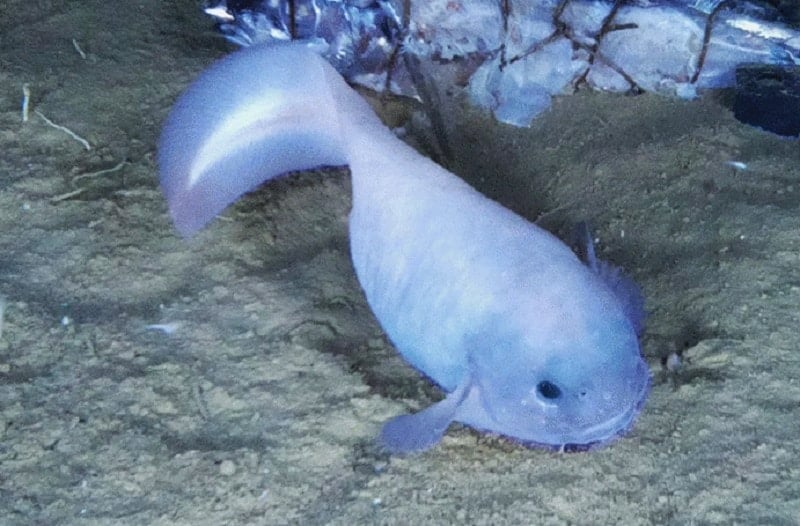
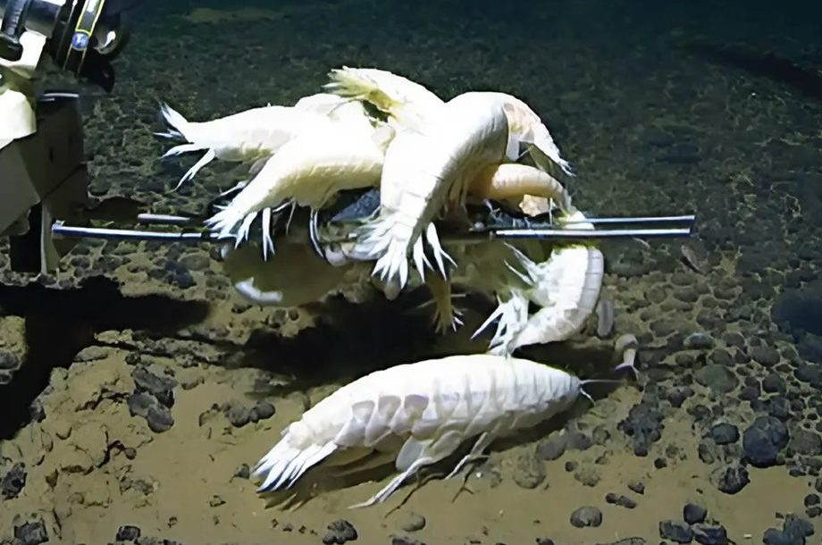
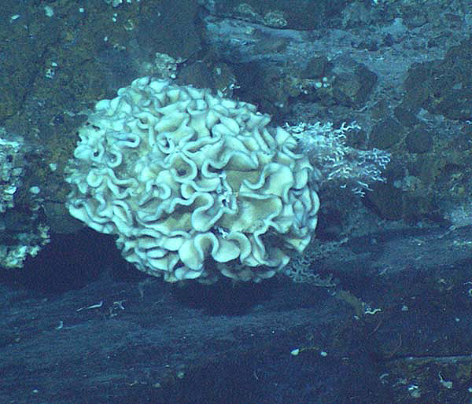

Sob Pressão Absoluta
1. A Química da Escuridão
Abaixo dos 6.000 metros, a vida ignora as regras da superfície. Sem a luz solar para alimentar a fotossíntese, os seres da Zona Hadal sobrevivem através da quimiossíntese ou da "neve marinha" - restos orgânicos que caem lentamente das camadas superiores. Ao reodr de fendas hidrotermais, bactérias transformam minerais tóxicos em energia, sustentando um ecosistema que parece pertencer a outro planeta.
2. Anatomia do Improvável
Abaixo, veja como algumas espécies evoluíram para suportar o insuportável:
| Espécie | Adaptação Principal | Profundidade Máxima |
|---|---|---|
| Peixe-Caracol (Hadal) | Corpo translúcido sem escamas e ossos de cartilagem flexível para não quebrar sob o peso da água. | ~8.100 m |
| Anfípodes Gigantes | Crustáceos que usam uma "armadura" química para impedir que a presssão destrua suas células. | ~9.000 m+ |
| Xenofióforos | Organismos de célula única que crescem até 10cm, agindo como esponjas de metais pesados no sedimento. | 10.500m |



3. A Barreira dos 1.000 Bar
No fundo da fossa, a pressão é de aproximadamente 1.086 bar. Isso é cerca de mil vezes a pressão atmosférica ao nível do mar. Se você estivesse lá sem proteção, a força da água esmagaria seus pulmões e cada célula do seu corpo instantaneamente. Para os animais que lá vivem, porém, essa pressão é necessária: suas membranas celulares são fluidas e suas proteínas são moldadas para funcionar sob essa compressão titânica.